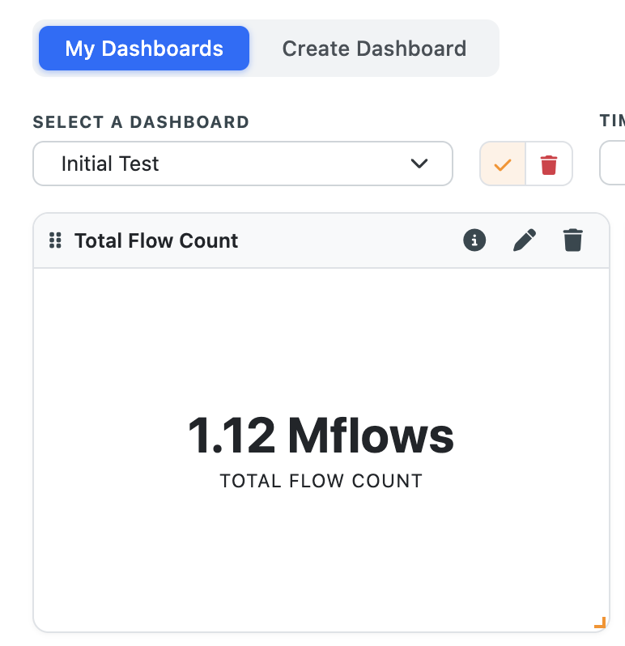
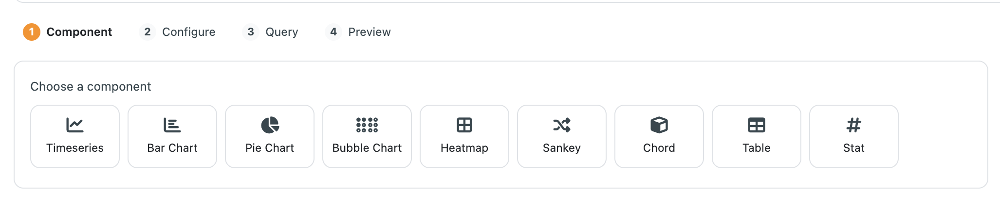

AI Панели мониторинга
AI Панели мониторинга позволяют создавать собственные постоянные информационные панели из виджетов (диаграмм, таблиц, счетчиков, блок-схем), данные которых поступают из ClickHouse запросов. Виджеты могут быть созданы nAnalyst на основе описания на простом языке или собраны вручную с помощью пошагового мастера. После сохранения панель мониторинга можно снова открыть в любое время, снова оценить в любом временном диапазоне и изменить порядок путем перетаскивания.
Примечание
AI Для информационных панелей требуется ntopng Предприятие XL и экземпляр ntopng с включенным ClickHouse (исторические потоки должны храниться в ClickHouse). Когда эти требования не выполняются, AI Панель управления пункт меню скрыт. Для создания виджетов с помощью nAnalyst также требуется настроенный провайдер LLM (см. LLM Настройка). Создание, редактирование и удаление информационных панелей разрешено только администраторам.
Открытие страницы
Страница доступна из меню ntopng в разделе AI Панель управления. Он организован в двух вкладках:
Мои информационные панели: просматривать, переупорядочивать и удалять сохраненные информационные панели.
Создать панель мониторинга: создавайте информационные панели и добавляйте или редактируйте их виджеты.
Активная вкладка и выбранная панель мониторинга сохраняются в URL-адресе страницы, поэтому панель мониторинга можно добавить в закладки или поделиться ею с другим пользователем того же экземпляра ntopng.
Мои информационные панели

Сохраненная панель мониторинга на вкладке «Мои панели мониторинга».
Выберите панель мониторинга из Выберите панель мониторинга раскрывающийся список, чтобы отобразить его. Панель инструментов содержит:
Редактировать / Закончить редактирование (кнопка карандаша): включает и выключает режим редактирования макета (см. Перемещение и изменение размера виджетов).
Удалить (кнопка корзины): окончательно удаляет выбранную панель управления после подтверждения. Это невозможно отменить.
Временной диапазон: выбор даты/времени с обновлением, который применяется ко всем виджетам панели управления одновременно. Запросы виджетов выполняются снова каждый раз при изменении диапазона.
Фильтры: панель фильтров (тот же синтаксис, что и на странице исторических потоков), применяемая ко всем виджетам. Используйте его, например, чтобы ограничить всю панель управления одним хостом, портом или протоколом.
Если виджет отображается «Нет данных в выбранном временном диапазоне и фильтрах» запрос был выполнен успешно, но не вернул ни одной строки: расширьте временной диапазон или удалите некоторые фильтры.
Видим, как извлекаются данные
Каждый заголовок виджета имеет информационная кнопка (значок круга i) в правом верхнем углу. Наведите на него курсор, чтобы увидеть запрос ClickHouse, который передает виджет, и щелкните его, чтобы скопировать запрос в буфер обмена (значок ненадолго превратится в галочку). В запросе используется временной диапазон и фильтры информационной панели, поэтому вы можете вставить его в клиент ClickHouse, чтобы проверить необработанные строки диаграммы, проверить число или использовать его в качестве отправной точки для нового виджета. Ничего не скрыто: вы всегда можете увидеть, откуда именно берутся данные виджета.
Перемещение и изменение размера виджетов

Режим редактирования макета: перетаскивание маркера, изменение размера маркера, редактирование и удаление кнопок.
В информационных панелях используется сетка из 12 столбцов. Нажмите кнопку карандаша, чтобы войти в режим редактирования, затем:
Двигаться: перетащите виджет за ручку в его заголовке и поместите его в новое положение. Другие виджеты сжимаются автоматически.
Изменить размер: перетащите маркер изменения размера в правом нижнем углу виджета. Минимальный размер — 2 столбца по 2 строки, виджет нельзя перетащить за пределы сетки.
Редактировать: карандаш в заголовке виджета открывает виджет в Создать панель мониторинга вкладка (см. ниже).
Удалять: значок корзины в заголовке виджета удаляет виджет с панели управления.
Каждое перемещение или изменение размера автоматически сохраняется через мгновение после того, как оно произошло, поэтому ничего не потеряется, если вы переключите вкладку. Нажмите кнопку карандаша еще раз (Закончено редактирование) выйти из режима редактирования; При сохранении макета отображается всплывающее сообщение с подтверждением.
Создание панели мониторинга
Виджеты можно создавать двумя способами: с ассистентом AI, описывая то, что вы хотите, простым языком, или вручную, самостоятельно выбрав тип диаграммы, единицу измерения и запрос. AI созданные виджеты необходимо просмотреть перед сохранением; созданные вручную виджеты считаются проверенными, так как каждый шаг вы настраиваете самостоятельно.

Вкладка «Создать панель мониторинга»
Откройте Создать панель мониторинга вкладка. Вверху страницы:
Выберите существующую панель мониторинга, чтобы добавить в нее виджеты, или нажмите кнопку Новая панель управления чтобы начать новый. Для новой информационной панели введите Название информационной панели (любой текст, кроме одинарной кавычки).
Добавьте один или несколько виджетов с помощью nAnalyst или ручного мастера, описанного ниже.
Нажмите Сохранить панель мониторинга. Вы возвращены в Мои информационные панели с выбранной приборной панелью.
Виджеты, которые еще не были сохранены, перечислены в разделе Новые виджеты (еще не сохранены), и счетчик сообщает, сколько из них находится в ожидании. Если вы покинете страницу с несохраненными виджетами, ntopng запросит подтверждение; несохраненные виджеты также сохраняются как черновики, и когда вы вернетесь, вам будет предложено Восстановить или Отказаться их.
Создание виджетов с помощью nAnalyst

Создание виджетов из описания на естественном языке
Панель справа работает как небольшой чат. Выберите провайдера LLM, опишите, что вы хотите видеть и нажмите Enter, например:
Топ-10 говорящих по байтам за последний час
Круговая диаграмма распределения серьезности предупреждений
nAnalyst исследует доступные таблицы ClickHouse, пишет SQL-запрос, проверяет его на соответствие базе данных (повторяет и автоматически исправляет в случае неудачи) и возвращает готовые виджеты. Прогресс отображается в реальном времени на панели, и вы можете остановить генерацию в любой момент. Если запрос неоднозначный, nAnalyst вместо догадок задает уточняющий вопрос.
Просмотр созданных виджетов
nAnalyst решает, для каждого создаваемого им виджета тип диаграммы который лучше всего соответствует данным, заголовок, единица измерения (байты, бит/с, пакеты, потоки, проценты, …) и SQL-запрос. Поскольку этот выбор осуществляется с помощью AI, каждый новый виджет отмечается Требуется проверка и необходимо просмотреть перед сохранением информационной панели. Для каждого виджета проверьте следующее:
тот заголовок описывает, что показывает виджет;
тот единица измерения является правильным для значений (например, байты или бит в секунду);
тот тип диаграммы соответствует данным (рейтинг лучше использовать в виде гистограммы, доля от общего числа в виде круговой диаграммы, тенденция во времени в виде временного ряда и т. д.);
тот запрос возвращает то, что вы ожидаете: используйте кнопку информации (см. Видим, как извлекаются данные), чтобы прочитать его, или Тестовый запрос в редакторе, чтобы запустить его и просмотреть результат.
Чтобы изменить любой из этих параметров, щелкните карандаш на виджете. Откроется тот же мастер, который использовался для создания вручную, с предварительно заполненными вариантами nAnalyst, где каждый шаг (Компонент, Настроить, Запрос, Предварительный просмотр) можно просматривать и изменять. Если вы будете удовлетворены, либо подтвердите изменения, либо нажмите кнопку Выглядит хорошо, отметь как отзыв кнопка на виджете. Проверяемый виджет меняет свой значок с Требуется проверка к Рассмотренои счетчик (например 2/3 проверено) показывает прогресс. Сохранить панель мониторинга Кнопка активируется только после просмотра всех новых виджетов.
Чтобы изменить запрос существующего виджета, отредактируйте его и используйте Пересмотр с помощью nAnalyst: опишите изменение (например, считать только TCP потоков), а nAnalyst изменяет только SQL, оставляя заголовок, тип диаграммы и макет нетронутыми.
Добавление виджета вручную
Если вы предпочитаете не использовать LLM или уже знаете нужный запрос, виджеты можно создать полностью вручную, без nAnalyst. Оба способа можно свободно комбинировать на одной панели.

Мастер виджетов: выбор компонента
Нажмите Добавить виджет чтобы запустить четырехэтапный мастер:
Компонент: выберите тип виджета (см. список ниже).
Настроить: установите заголовок, единицу измерения, используемую для форматирования значений, а для диаграмм — заголовки осей.
Запрос: напишите SQL-запрос ClickHouse и нажмите Тестовый запрос. Предварительный просмотр шаг доступен только после успешного выполнения запроса. Вы также можете попросить nAnalyst пересмотреть запрос.
Предварительный просмотр: виджет отображается с использованием живых данных. Выберите свой Ширина (столбцы) и Высота (строки), от 2 до 12, затем нажмите Добавить в панель управления.

Предварительный просмотр виджета с шириной и высотой
В запросах должны использоваться следующие заполнители, которые ntopng заменяют во время выполнения диапазоном времени информационной панели и выбранным интерфейсом:
SELECT ... FROM flows
WHERE FIRST_SEEN >= $EPOCH_BEGIN$ AND FIRST_SEEN <= $EPOCH_END$ AND IFID = $IFID$
Типы виджетов
Тип |
Описание |
|---|---|
Временной ряд |
Линейный график одного или нескольких значений с течением времени. |
Гистограмма |
Ранжированные значения, вертикальные или горизонтальные, опционально сгруппированные. |
Круговая диаграмма |
Доля каждого предмета в общем объеме. |
Пузырьковая диаграмма |
Трехмерное сравнение (X, Y и размер пузырьков). |
Тепловая карта |
Интенсивность значения в двух измерениях. |
Санки |
Трафик, передаваемый от источника к цели. |
Аккорд |
Отношения и объемы между набором сущностей. |
Стол |
Необработанные строки, возвращаемые запросом. |
Стат |
Одно выделенное число (например, общее количество потоков). |
Значения можно форматировать с использованием следующих единиц измерения: число, полное число, байты, бит/с, потоки, пакеты, pps, мс, проценты или без форматирования.